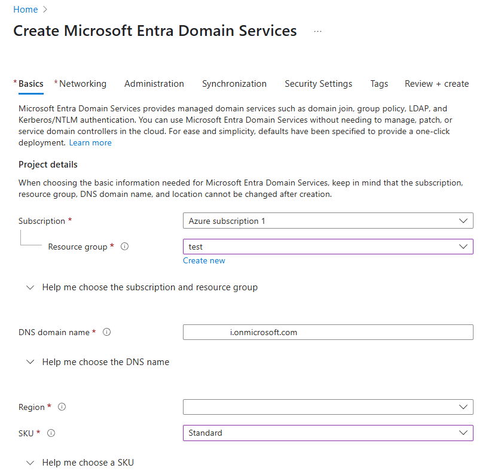

Integração do Azure Ad Domain Services (LDAPS)
Este tutorial é uma contribuição da comunidade e não é suportado pela equipe Nullcore. Serve apenas como uma demonstração sobre como personalizar o Nullcore para o seu caso de uso especÃfico. Quer contribuir? Confira o tutorial contribuinte.
Este guia explica como integrar o Nullcore com o Azure Ad Domain Services (AAD DS) para a autenticação Secure LDAP (LDAPS).
1. Pré -requisitos
| Item | Descrição |
|---|---|
| Conta do Azure | Uma conta com permissões para implantar a AAD DS e modificar NSGs. |
| OpenSSL 3.x | Necessário para gerar um PFX autoassinado para teste. |
| Nome de domÃnio | Usaremosopenwebui.onmicrosoft.comComo exemplo (seu domÃnio primário AAD). |
| Abra o servidor webui | Uma instância em execução do Nullcore, implantado via Docker ou Bare Metal. |
Em um ambiente de produção, use um certificado PFX emitido por uma Autoridade de Certificado Público (CA) e setLDAP_VALIDATE_CERT=true
2. Implante serviços de domÃnio do Azure AD
-
No portal do Azure, procure e selecioneServiços de domÃnio do Azure AD
-
CliqueCriar
-
Selecione seuSubscriçãoeGrupo de recursos(ou crie um novo).
-
ParaNome do domÃnio DNS, Digite seu domÃnio (por exemplo,
openwebui.onmicrosoft.com). Este valor será usado paraLDAP_SEARCH_BASEmais tarde. -
Mantenha as configurações padrão paraSku, Assim,Conjunto de réplicas, etc., e cliqueRevisão + Criar

-
Após a implantação, navegue até a lâmina do Azure ad DS e observe oRede / sub -rede virtual. Se o seu servidor Nullcore não estiver no mesmo VNET, você deverá criar uma regra NSG para permitir o tráfego na porta 636.
3. Encontre o IP externo LDAP seguro
-
Navegue até sua lâmina AAD DS →Visão geral
-
SobLDAP seguro, encontre oEndereços IP externos
-
Este IP (por exemplo,
1.222.222.222) será o seuLDAP_SERVER_HOSTvalor no.envarquivo.
4. Ativar LDAP seguro (LDAPS)
4.1. Requisitos de certificado (PFX)
| Atributo | Exigência |
|---|---|
| Formatar | PKCS #12 (.pfx) |
| Criptografia | RSA 2048 / SHA-256 |
| Assunto Nome Alternativo (SAN) | Deve incluir curingas:*.{your_domain}.onmicrosoft.come{your_domain}.onmicrosoft.com |
| Senha | Necessário para o upload. Certifique -se de lembrar disso. |
Para a produção, recomendamos o uso de Let's Encrypt ou outro ca. O processo autônomo abaixo é apenas para fins de teste.
4.2. Gerar um pfx curinga com o OpenSSL (para teste)
-
Criar
openssl_wildcard.cnf[REQ]
Distinguished_name = req_distinguished_name
x509_extensions = v3_ca
req_extensions = v3_req
prompt = Não
[req_distinguished_name]
C = nós
ST = CA.
L = São Francisco
O = mytestorg
OU = Departamento de teste
Cn = *. {Your_domain} .onmicrosoft.com
[v3_ca]
sujeito
AuthorityKeyIdentifier = KeyId: sempre, emissor
BASICCONSTRAIS = CrÃtico, CA: Falso
keyusage = crÃtico, digitalsignature, keyenciplement
ExtendedKeyUsage = ServerAuth
SubjectName = @alt_names
[v3_req]
BASICCONSTRANTS = CA: FALSE
keyusage = digitalsignature, keyenciplement
ExtendedKeyUsage = ServerAuth
SubjectName = @alt_names
[alt_names]
Dns.1 = *. {Your_domain} .onmicrosoft.com
Dns.2 = {your_domain} .onmicrosoft.comSubstituir
{your_domain}com seu domÃnio real. -
Gerar chave e certificado:
# Gere uma chave privada
OpenSSL Genrsa -Out privateKey_wildcard.key 2048
# Crie uma solicitação de assinatura de certificado (CSR)
OpenSSL req -New -Key PrivateKey_Wildcard.key \
-out Wildcard.csr -config OpenSSL_WILDCARD.CNF
# Crie um certificado autoassinado (válido por 365 dias)
OpenSSL x509 -req -Days 365 -N Wildcard.csr \
-SignKey PrivateKey_wildcard.key \
-Out certificado_wildcard.crt \
-Extensions v3_req -extfile OpenSSL_WILDCARD.CNF
# Pacote em um arquivo pfx
OpenSSL PKCS12 -export -out certificado_wildcard.pfx \
-inkey privateKey_wildcard.key -in certificado_wildcard.crt -
Faça o upload para Aad DS:
- Navegue até sua lâmina AAD DS →LDAP seguro
- Clique noCertificado de uploadBotão, selecione
certificate_wildcard.pfxe insira a senha. - AlternarLDAP seguroparaHabilitadoe cliqueSalvar
5. Configurar o Network Security Group (NSG)
| Contexto | Valor de exemplo |
|---|---|
| Nome | Allow-LDAPS |
| Prioridade | 310 |
| Fonte | Any |
| Porta de destino | 636 |
| Protocolo | TCP |
| Ação | Allow |
Se permitir o acesso da Internet, restrinja o intervalo de IP de origem ao mÃnimo necessário para a segurança. Se o Nullcore estiver no mesmo VNET, esta etapa poderá ser ignorada.
6. Crie uma conta de serviço no ID da ENTRA
-
No portal do Azure, navegue paraEntra IDUsuáriosNovo usuário
-
Defina o nome de usuário (por exemplo,,
ldap@{your_domain}.onmicrosoft.com -
Defina uma senha forte e desmarcarO usuário deve alterar a senha no próximo login
-
Vá para oGruposguia e adicione o usuário aoAdministradores da AAD DCgrupo (necessário para consultar todos os usuários).

7. Configurar variáveis ​​de ambiente aberto da Webui (.env)
Aqui está um exemplo de configuração para o seu.envarquivo:
##################################################
# Ldap
##################################################
Enable_ldap = "true"
Ldap_server_label = "Azure ad ds"
Ldap_server_host = "1.222.222.222"
Ldap_server_port = "636"
# Opções TLS
Ldap_use_tls = "true"
Ldap_validate_cert = "false" # definido como true para um CA público
#Ldap_ca_cert_file = "/etc/ssl/certs/openwebui_ca.crt"
# Conta de ligação
Ldap_app_dn = "ldap@ {your_domain }.onmicrosoft.com"
Ldap_app_password = "<strong-password>"
# Escopo de pesquisa
Ldap_search_base = "dc = {your_domain}, dc = onmicrosoft, dc = com"
Ldap_attribute_for_username = "samaccountname"
Ldap_attribute_for_mail = "userprincipalname"
Ldap_search_filter = "(& (objectClass = user) (objectCategory = pessoa))"
# Sincronização do grupo (opcional)
# Enable_ldap_group_management = "true"
# Enable_ldap_group_creation = "true"
# Ldap_attribute_for_groups = "membroof"
Substitua os espaços reservados como{your_domain}e<STRONG-PASSWORD>com seus valores reais.
8. Configure a sincronização do grupo (opcional)
O Nullcore pode sincronizar as associações do grupo diretamente do seu diretório LDAP. Quando um usuário faz login, as informações do grupo são buscadas e atualizadas no Webui aberto.
Para ativar esse recurso, adicione as seguintes variáveis ​​de ambiente:
ENABLE_LDAP_GROUP_MANAGEMENT="true": Ativa o recurso de gerenciamento de grupo.ENABLE_LDAP_GROUP_CREATION="true": Se um grupo do LDAP não existir no Webui aberto, ele será criado automaticamente.LDAP_ATTRIBUTE_FOR_GROUPS="memberOf": Especifica o atributo LDAP que contém as associações de grupo do usuário.memberOfé um atributo padrão para esse fim em ambientes do Active Directory.
9. Adicione o certificado CA ao servidor (opcional)
Para ativar a validação completa do TLS (LDAP_VALIDATE_CERT="true"
sudo cp certificado_wildcard.crt /usr/local/share/ca-certificates/openwebui.crt
sudo update-Cercertificates
Reinicie o Nullcore depois de fazer essa alteração.
10. Teste a conexão LDAPS
10.1. Openssl Handshake Check
OpenSSL s_client -Connect 1.222.222.222:636 -ShowCerts
ProcurarVerify return code: 0 (ok)Para confirmar que o certificado é confiável.
10.2. LDAPSERCH (teste de ligação)
LDAPSERCH -H LDAPS: //1.222.222.222 \
-D "ldap@openwebui.onmicrosoft.com" -w '<fast>' \
-b "dc = openwebui, dc = onmicrosoft, dc = com" \
-s sub "(samaccountname = <Test_User_Id>)"
Uma pesquisa bem -sucedida retornará os detalhes do usuário especificado.